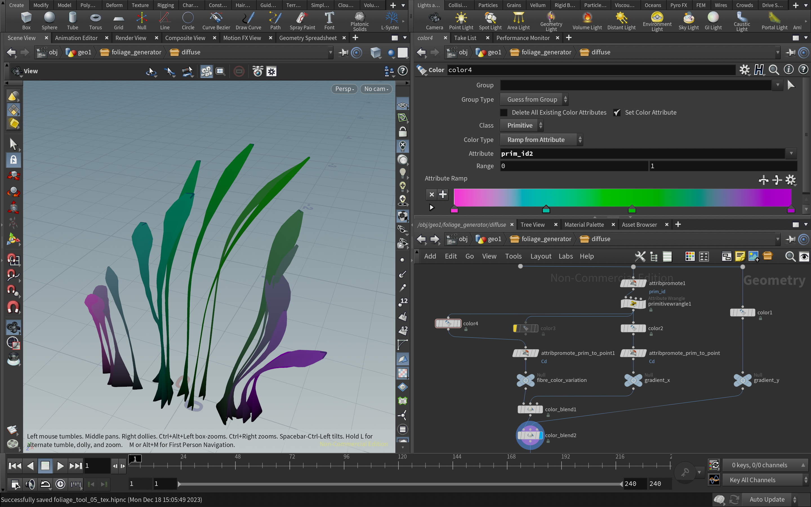
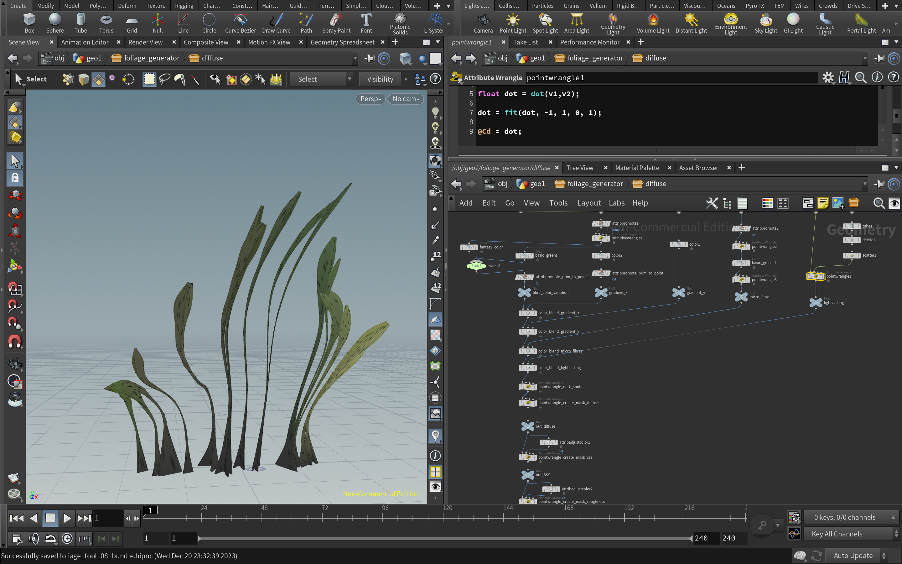

Houdini FX 19.5
Procedural Content Generation
Houdini Digital Asset (HDA)
This is a Houdini Digital Asset that allows artists to procedurally generate foliage (grass,bushes) to populate environments.
I started this journey by following TECHARTWORLDS course. The base of the asset is defined by setting up vertical curves. A line with points scattered on it on the ground and a scale ramp assigned to these points. The scale ramp varies on x axis by utilizing relative sorted point nums (VEX). Vertical lines are then copied to these scattered points and their lengths (or the skyline profile of the asset) is controlled using the scale ramp. A bottom-to-top gradient attribute is created using relative Y position of the vertical line (VEX). This attribute then drives the noise distribution in the Point VOP node to add some jittering to the otherwise straight lines.
The next aspect added is bending. Using the relative x positions again, a ramp is created to act as the driver. Two bending nodes are used to represent the range of angles and each point's position is then linearly interpolated between these two bending angles based on the driver's value.
Once the base curves are ready, the next step is to add some geometry. A simple V shape is used along with a Sweep nodes to add some geometry to the curve. The scale ramp available in the sweep node can be used to control the thickness along the length of each fibre. Another added variation is utilizing randomized pscale attribute of each curve using the prim num of each curve & clamping it within a user defined range.
I created a simple leaf-like shape using a circle and processed it in a similar way with the Sweep node to add leaves along the curve. Merging it with the already created stems completes the leafy bush asset. A flatter V shape in the sweep node creates wider leaves for creating another variant of a bush. All these options are passed through switch nodes for the user to choose from. The final result is subdivided and normal are generated for it.
Basic Render
Halftone Shaded Render
Halftone Shaded Render

Final step to complete the look of the asset is to add some color. The base diffuse color is made up of two gradients, one in x and the other in Y direction. Blended together with a palette of basic green shades. The gradient in Y direction is the same one used for adding noise in the curves. The gradient in X direction is calculated as relative prim num remapped to 0 to 1 range.
Some random dark spots and faded vertical lines were added to each leaf (fibre) to add some realism. The dark spots are added based on randomized point positions. The faded vertical lines are distributed horizontally in each fibre. To create the lines, the asset's UVs were generated and the fractional part of it's u value was used to apply color.
A low poly plane that encaptures the foliage asset is used to trasnfer the color and export the texture maps for the asset. The maps baker node is used for this feature.